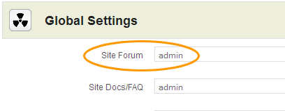
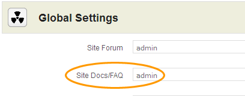
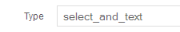

Jamroom MediaPro Light Skin Settings.
Thank you for purchasing and using MediaProLight 5.
If you are installing this template yourself please follow the instructions below using suitable file editing software such as BBEdit or alternatively use the Template Editor in your Jamroom Admin Tools.
If you prefer not to install yourself we have a guaranteed installation service available, visit us for more info: http://www.jamroom.net
Installation:
1. Unzip the file on your hard drive and using a suitable FTP software simply upload the jrMediaProLight and jrMediaProLight folders to the skins directory on your server.
2. To activate the MediaPro Light Skin for your Jamroom5 Install, log-in as admin and click the Skins tab, then click the jrMediaProLight or jrMediaProLight menu entry and on the Info tab check the set as active skin checkbox and finally click the save button.
Site branding:
Simply edit or replace the following files to change the branding of your site.
- Main Header Logo (site wide | width: 375px height: 80px) - skins/jrMediaProLight/img/logo.png
- Privacy Policy - skins/jrMediaProLight/privacy_policy.tpl
- Terms Of Service - skins/jrMediaProLight/terms_of_service.tpl
- Contact Us - The contact us page is a form, to modify, add/delete fields to the contact form, click the form designer button at the top right while on the contact us page logged in as the site admin.
- Footer Information - skins/jrMediaProLight/footer.tpl
Light or Dark layout.
- This option use to be found in the MediaPro Light Skin Settings for Jamroom 4, however... with Jamroom 5, site owners have the ability to modify skin templates, images and language strings via the control panel so it was decided to create separate MediaPro Dark and Light template sets for Jamroom5. To use the dark or light version, simply activate the MediaPro Light or MediaProLight skin like you did in step 2 of the Installation instructions above.
MediaProLight 5 Settings (skins/jrMediaProLight/config.php file):
MediaProLight 5 has many configuration settings, as admin you will see a link in the ACP drop down menu which links to the MediaProLight 5 Skin Settings page in your admin.
Note: Please take your time to view the MediaProLight 5 Settings and descriptions.
Site Forum:
The MediaProLight main navigation menu is setup with a Forum link if you have the jrForum module installed on your system. However... you must add the Profile URL name in the Site Forum field of the skin settings as shown below.

Note: If you do not have the jrForum module installed/activated, leave this field blank.
Site Docs/FAQ:
The MediaProLight main navigation menu is setup with a Documentation link, if you have the jrDocs module installed on your system. However... you must add the Profile URL name in the Site Docs/FAQ field of the skin settings as shown below.

Note: If you do not have the jrDocs module installed/activated, leave this field blank.
House Radio:
As standard the House Radio is DISABLED in the MediaProLight 5 Settings. If you haven't already done so, create a new Admin Audio Playlist by clicking the Add To Playlist button next to the audio tracks you want on your House Radio and make a note of the Playlist Name. After you've created your playlist, go to your MediaProLight Settings, ENABLE the Show House Radio feature and enter the Playlist Name.
Note: You must have the jrPlaylist module installed and activated.
House Channel:
As standard the House Channel is DISABLED in the MediaProLight Settings. If you haven't already done so, create a new Admin Video Playlist by clicking the Add To Playlist button next to the video tracks you want on your House Channel and make a note of the Playlist Name. After you've created your playlist, go to your MediaProLight Settings, ENABLE the Show House Channel feature and enter the Playlist Name.
Note: You must have the jrPlaylist module installed and activated.
Site News:
MediaProLight includes news and informational pages which are based on the Jamroom blog system, these pages use category names so that the blogs are routed to the correct pages in the template.
When you create Admin Blogs or blogs for your News Page you need to set the correct category for the blogs to show up in the correct place. There is 1 site index blog category, News. And 3 News Page categories Latest, Featured and Exclusive.
Index Site News Section:
- Site News Tab Category - news
News Pages:
- Latest News Category - latest
- Featured News Category - featured
- Exclusive News Category - exclusive
Modify or create a new blog and in the Blog Category make sure to enter one of these categories.
Note: If you do not set these categories, the blog entries will NOT be shown in the correct place.
Slider Carousel:
The Slider Carousel can be controlled by MediaProLight 5 Settings. You can manually select which profiles to show in the slider by adding the Profile ID's, up to 20 ID's, separated by a comma ie. 1,2,3 etc., in the Featured Slider field of the MediaProLight 5 Settings.
Note: If you leave this field blank, the Slider will show the 20 most viewed or popular artist profiles.
Features:
- Responsive
- Hiding navigation arrows for both the slider and carousel.
- Image Slider and Carousel are synced together.
Featured Artists:
The Featured Artists on the Home Page can be controlled by MediaProLight 5 Settings. You can manually select which profiles to show in the slider by adding the Profile ID's, up to 6 ID's, separated by a comma ie. 1,2,3 etc. in the Featured Artists field of the MediaProLight 5 Settings.
Note: If you leave this field blank, the Feature Artist section will show the most viewed or popular artist profiles.
Site Ads/Google Ads:
Google Ads have been configured throughout the templates, your Google Ads code for ALL ads needs to be set in MediaProLight 5 Settings.
If you prefer to use the two ad fields, set the Google Ads to NO in MediaProLight 5 Settings. Check the Site Ads check box to hide all ads on the site.
Note: As of now, the Jamroom 5 does NOT have an Ad Manager Module.
Video Category:
The JR5 jrVideo module by default is not setup with a video category. If you would like to add a video category you'll need to add the field to the Video Create/Modify form by clicking the Form Designer button when creating/modifying a video.
When your in the form designer section, set the New Name Field to video_category
The next section is where you setup the form field. Set the following fields to the values below:



After setting those fields, click the Save Changes button. Your Video Create form should now have a category field and the jrMediaProLight templates are already setup with the correct variable.
Note: Make sure to update the Video modify and Video create album with same fields.
The final step is to active the video categories by checking the Video Categories checkbox in your skin settings.
Language Files:
jrMediaProLight is configured for Jamroom's multilingual system which allows the site language to be quickly changed by clicking on the flags in the welcome bar. If you wish to use an additional language for your site you can do so by translating from one of the existing language files which are located in the "skins/jrMediaProLight/lang/" directory. Once you have completed the translation, save the file as xx-XX.php with "xx" being your countries suffix in lower case and XX being your countries suffix in upper case. You will then need to edit the file skins/jrMediaProLight/header.tpl and place the following line in the "Language Flags" section - either above or below the existing calls:
Again changing xx-XX and xx.png to your countries suffix in lower case and upper case. Also change LANGUAGE to the new language, ie. Spanish etc...
Requirements:
Required:- Jamroom Core v5.x.x
- jrAction Module v1.x.x
- jrAudio Module v1.x.x
- jrVideo Module v1.x.x
- jrPlaylist Module v1.x.x
- jrBlog Module v1.x.x
- jrComment Module v1.x.x
- jrPage Module v1.x.x
- jrGallery Module v1.x.x
- jrEvent Module v1.x.x
- jrSoundCloud Module v1.x.x
- jrVimeo Module v1.x.x
- jrYouTube Module v1.x.x
Support:
If you have any support questions or require assistance please use the Jamroom Support Forums or if you have access to the Support Center, you may open a support ticket.
Thanks Again For Your Purchase And Your Support!.
- The Jamroom Network Team
Terms & Conditions:
The Jamroom Network Team are not liable for any hardware or software damage or data corruption on your server(s). You are licensed to use one copy of this software per site, additional installations require additional license purchases. By utilising our software you agree to our terms and conditions of use.
This work is copyright:
You may not distribute or use this work for other commercial purposes, you are licensed to use this work on one site/domain only. You may modify the files included to suit your site layout and remove the "Design by Jamroom Network" link from the footer. However, you must leave all hidden credits and copyright in the templates intact.
Copyright ©2013 Jamroom Network Design
Jamroom is Copyright ©2003 TallDude Networks, all rights reserved.